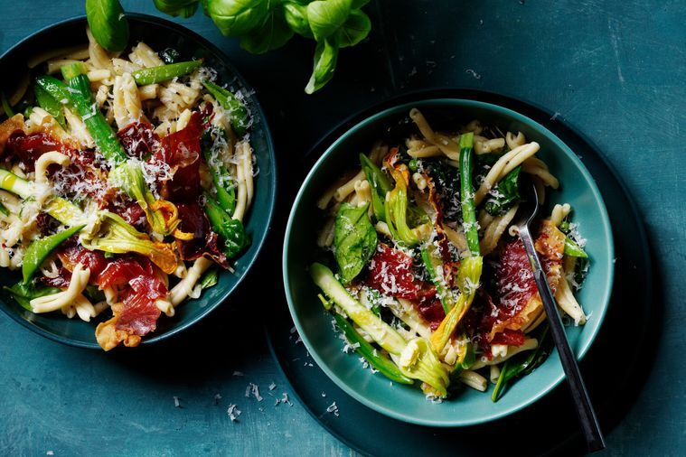

Easy Pasta
something different and delicious for your healthy day.
Preparation time
- Total: Approximately 60 minutes
- Preparation: 45 minutes
Ingredients
- 6 slices prosciutto
- 500g casarecce pasta
- 1/4 cup (60ml) extra virgin olive oil, plus extra
- 2 eschalots, thinly sliced 2 garlic cloves, sliced
- Pinch chilli flakes
- 300g sugar snap peas
- 2 large handfuls baby spinach 1 cup fresh or frozen peas 6 zucchini flowers, sliced lengthways in half
- Finely grated zest and juice of 1 lemon
- 2 large handfuls basil leaves and finely grated parmesan, to serve
- Handful flat-leaf parsley, finely chopped
Instructions
- step1: Preheat oven to 200°C/180°C fan-forced. Line a baking tray with baking paper.
- step2: 2.Lay prosciutto in a single layer on prepared tray. Bake for 10-12 minutes, until crisp. Set aside.
- step3: Meanwhile, bring a large saucepan of water to the boil and season generously with salt. Add pasta and cook for about 8 minutes, or according to packet instructions, until al dente, reserving 1/3 cup (80ml) pasta water.
- step4: Meanwhile, heat oil in a large, deep frypan over medium-high heat. Cook eschalot, garlic and chilli flakes with a pinch of salt flakes for 2-3 minutes, stirring occasionally, until beginning to soften. Add sugar snap peas and cook for 2 minutes, tossing often to cook evenly. step5: Drain pasta and add to pan along with reserved cooking water, baby spinach, peas, zucchini flowers and lemon zest and juice. Toss until well combined and season to taste. Toss through the parsley.
- step6: Drizzle with extra oil and serve scattered with crispy prosciutto, basil and parmesan.
Nutrition
The table below shows nutritional values per serving without the additional fillings.
| Calories | 330kcal |
|---|---|
| Carbs | 50g |
| Protein | 18g |
| Fat | 7g |